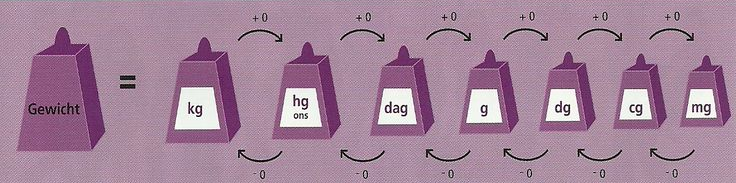

Gewichten
75 hg + 60.000 gram + 64 pond + 1200 ons = … kg
A: 111,5
B: 212,75
C: 219,5
D: 315,5
Gegeven Informatie
75 hg
60.000 gram
64 pond
1200 ons
Gevraagde Informatie
Het totale gewicht in kilos
Oplossing
We maken gebruik van de afbeelding hieronder.
Elke stap van links naar rechts is maal 10. Bijvoorbeeld: 10kg = 100hg.
Elke stap van rechts naar links is gedeeld door 10. Bijvoorbeeld: 100dg = 10g.

Naast de officiële gewichten uit het metriek stelsel zijn er nog twee andere maten die vaak worden gebruikt, pond en ons. Een pond is 500 gram, en een ons is 100 gram.
Stap 1: eerst rekenen we alles om in kilos
75 hg = 7.5 kg
60.000 gram = 60 kg
64 pond = 32 kg
1200 ons = 120 kg
Stap 2: tel alles bij elkaar op
7.5 + 60 + 32 + 120 = 219,5
Het juiste antwooord is C